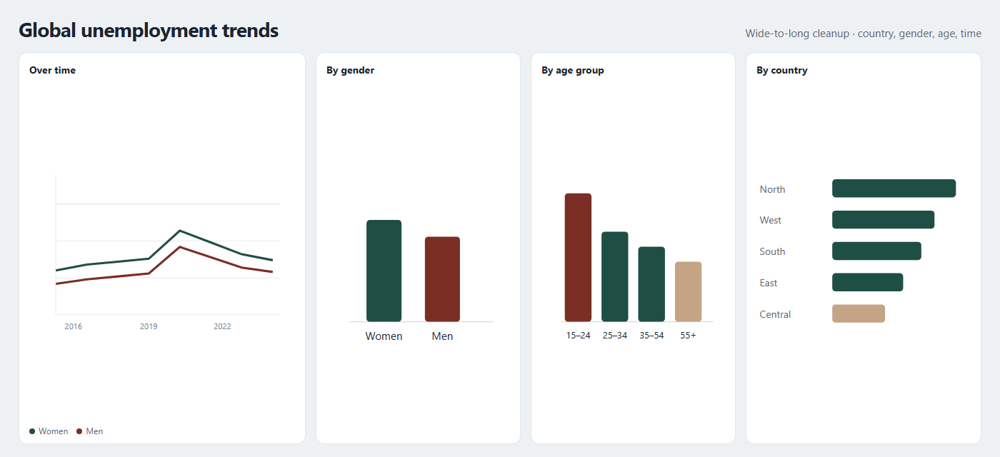
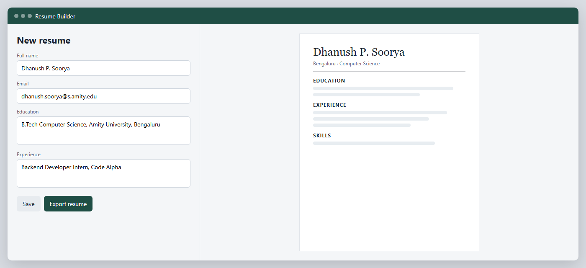
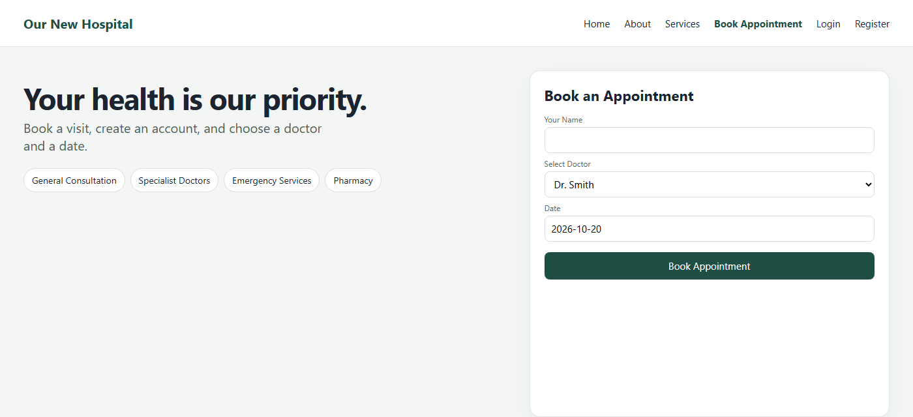
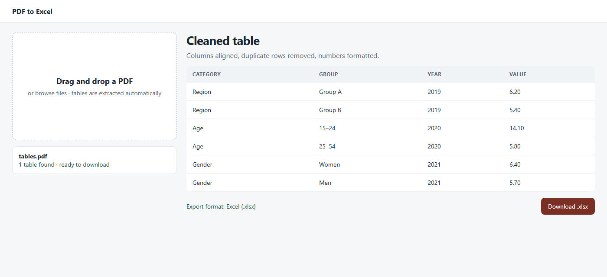

Selected work
Four separate pieces.
Each one is a small tool with a clear result. The screens below are views of those tools.

01
Global unemployment trends
- Python
- Pandas
- NumPy
- Matplotlib
- Seaborn
A data study of a real-world unemployment dataset. I cleaned the records and transformed them from wide to long format with Pandas and NumPy.
- Ran statistical summaries on the cleaned table.
- Made more than ten charts of patterns by country, gender, age group, and time.

02
Resume builder
- Python
- File handling
- Graphical interface
A desktop application that turns structured user input into a formatted resume.
- Collected details through a simple graphical interface.
- Handled formatting and export with Python file handling.

03
Hospital appointment booking
A Flask site for a hospital: home, about, services, registration, login, and booking.
- The appointment form takes a name, a doctor, and a date.
- Users and appointments are stored in MySQL.
View on GitHub

04
PDF to Excel converter
- Python
- pdfplumber
- Pandas
- Streamlit
A web tool that extracts structured tables from PDF files and writes them to Excel.
- Pandas fixes column alignment, removes duplicate rows, and formats numbers.
- Streamlit provides drag-and-drop upload and an immediate download.